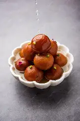

Gulab Jamun
IngredientsFor the Dough:1 cup milk powder1/4 cup all-purpose flour (maida) 1/4 teaspoon baking soda 2 tablespoons ghee 3 to 4 tablespoons warm milk For Frying:Ghee or Oil
InstructionsFirst make the sugar syrup by combining sugar and water in a deep pan. Add cardamom and saffron if using. Boil until the sugar dissolves, then simmer for 5 to 7 minutes. Turn off the heat and stir in rose water. Keep warm. Prepare the dough by mixing milk powder, all-purpose flour, and baking soda in a bowl. Add ghee and rub gently with your fingers until it resembles breadcrumbs. Slowly add warm milk, a little at a time, and knead into a soft smooth dough. Cover and rest for 10 minutes. Divide the dough into small equal portions and roll them gently into smooth crack-free balls about marble size. Heat ghee or oil on low-medium flame. Fry the balls, stirring gently, until they turn golden brown. Remove and drain excess oil. Immediately transfer the fried jamuns into warm syrup. Let them soak for at least 2 hours so they become soft and juicy. Serve warm or at room temperature, garnished with chopped pistachios or almonds |
 |